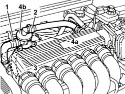
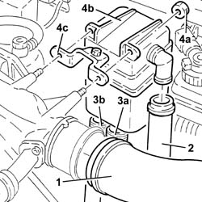
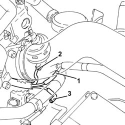
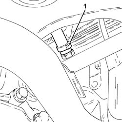
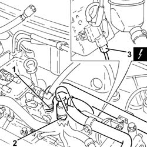
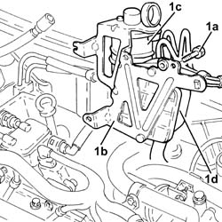
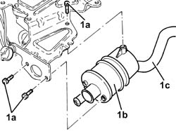
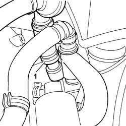
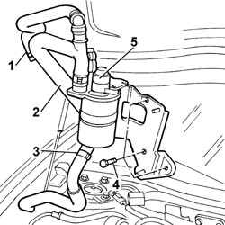

1080D34 engine oil vapour separator - r + r
- Path
- Procedures > 10 ENGINE > 1080 EXHAUST EMISSION CONTROL SYSTEM > 1080D crankcase vapour/gas recirculation system > 1080D34 engine oil vapour separator - r + r
- Kind
- repair procedure (removal / refitting; the operation number is the code)
- Applies to
- engines: 2.5 V6, 1.9 JTD 8v , 1.9 JTD 16v, 2.4 JTD 10v, 2.4 JTD 20v; all production periods
- Interactive page
- https://sloeber94.github.io/elrnDB-a156/en/#/3237594
Applies to: engines: 2.5 V6; all production periods
 Removing
Removing
 Refitting
Refitting1. Disconnect the oil vapour recovery pipe from the separator.
2. Disconnect the oil vapour recirculation pipe from the separator.
3. Disconnect the condensation oil recovery pipe from the separator.
4. Undo the bolts (4a) and remove the engine oil vapour separator (4b).

Applies to: engines: 2.5 V6; all production periods
Refitting
RemovingFit the oil vapour separator and fix it using the bolts.
Connect the pipes to the separator.
Applies to: engines: 1.9 JTD 8v , 2.4 JTD 10v; all production periods
Removing
Refitting1. Disconnect the air inlet hose from the inlet manifold.
2. Disconnect the vapour supply pipe to the inlet from the oil vapour separator.
3. Disconnect sump oil return pipe (3a) and crankcase oil vapour inlet pipe (3b) from the separator.
4. Undo the nuts (4a), then remove the oil vapour separator (4b) and the bracket (4c).

Applies to: engines: 1.9 JTD 8v , 2.4 JTD 10v; all production periods
Refitting
RemovingFit the engine oil vapour separator and bracket, then fix them using the nuts.
Connect the vapour return pipe from the crankcase to the oil vapour separator and the condensed oil return pipe to the sump.
Connect the vapour supply pipe to the inlet to the oil vapour separator.
Connect the air inlet hose to the inlet manifold.
Applies to: engines: 1.9 JTD 16v; all production periods
Removing
RefittingPosition the vehicle on the ramp.
Proceed with removal 1016A10 sound-proofing cover - r + r .
Ensure that the ignition key is in the OFF position, then disconnect the negative battery terminal (-).
 | Name | Connector |
|---|---|---|
- | Battery |
Proceed with removal 7055B54 under-engine guard - r r .
Proceed with removal 1044B10 fuel filter assembly - r + r or replace .
1. Disconnect the vacuum pipe from the three-way connector on the brake servo vacuum intake pipe.
2. Disconnect the vacuum pipe from the pneumatic valve on the throttle body.
3. Disconnect the intermediate coupling for the vacuum pipe for the turbocharger vane position control actuator solenoid valve.

Applies to: engines: 1.9 JTD 16v; all production periods
1. Loosen the band and disconnect the condensation oil recovery pipe from the crankcase sump.

Applies to: engines: 1.9 JTD 16v; all production periods
1. Loosen the band and disconnect the oil vapour recovery pipe from the separator.
2. Loosen the band and disconnect the oil vapour recirculation pipe from separator.
3. Disconnect the electrical connection from the solenoid on the vacuum tank.
| Name | Connector |
|---|---|---|
3 | Butterfly casing solenoid valve |

Applies to: engines: 1.9 JTD 16v; all production periods
1. Undo the bolts (1a) and remove the bracket (1b) complete with oil vapour separator (1c) and vacuum reservoir (1d).

Applies to: engines: 1.9 JTD 16v; all production periods
1. At the bench, undo the bolts (1a) and remove the engine oil vapour separator (1b) complete with condensed oil recovery pipe (1c) from the mounting bracket.

Applies to: engines: 1.9 JTD 16v; all production periods
Refitting
RemovingPlace the oil vapour separator complete with condensed oil recovery pipe back in its seating on the mounting bracket and secure it with its bolts.
Place the bracket complete with oil vapour separator and vacuum reservoir back in its seating, then secure it with its bolts.
Connect the electrical connection to the solenoid on the vacuum reservoir.
Connect the oil vapour recirculation pipe to the separator and tighten the band.
Connect the oil vapour recovery pipe to the separator and tighten the band.
Connect the condensation oil recovery pipe to the crankcase sump and tighten the band.
Connect the intermediate coupling for the vacuum pipe for the turbocharger vane position control actuator solenoid valve.
Connect the vacuum pipe to the pneumatic valve on the throttle body.
Connect the vacuum pipe to the three-way connector on the brake servo vacuum intake pipe.
Proceed with refitting 1044B10 fuel filter assembly - r + r or replace .
Proceed with refitting 7055B54 under-engine guard - r r .
Connect the negative (-) battery terminal.
Proceed with refitting 1016A10 sound-proofing cover - r + r .
Remove the car from the ramps.
Applies to: engines: 2.4 JTD 20v; all production periods
Removing
RefittingPosition the vehicle on the ramp.
Proceed with removal 1016A10 sound-proofing cover - r + r .
Proceed with removal 1060F50 fuel return manifold - r r .
Proceed with removal 1060G70 vacum tank for controlling engine air intake r r .
1. Loosen the band and disconnect the oil vapour recovery pipe from the separator.

Applies to: engines: 2.4 JTD 20v; all production periods
1. Loosen the band and disconnect the ipe from the engine oil vapour separator to the filler, filler side.
2. Loosen the band and disconnect the oil vapour pipe from the intake to the separator, crankcase side.
3. Loosen the band and disconnect the engine oil vapour recovery pipe, separator side.
4. Undo the bolts securing the engine oil vapour separator mounting bracket.
5. Remove the engine oil vapour separator complete with mounting bracket and pipes.
At the bench, separate the engine oil vapour separator from the mounting bracket and pipes.

Applies to: engines: 2.4 JTD 20v; all production periods
Refitting
RemovingAt the bench, assemble the engine oil vapour separator to the mounting bracket and pipes.
Refit in its seating the engine oil vapour separator complete with mounting bracket and pipes.
Tighten the bolts securing the engine ooil vapour separator mounting bracket.
Connect the engine oil recovery pipe, separator side, and tighten the band.
Connect the oil vapour pipe from the intake to the separator, engine crankcase side, and tighten the band.
Connect the pipe from the engine oil vapour separator to the filler, filler side, and tighten the band.
Connect the engine oil vapour recovery pipe to the separator and tighten the band.
Proceed with refitting 1060G70 vacum tank for controlling engine air intake r r .
Proceed with refitting 1060F50 fuel return manifold - r r .
Proceed with refitting 1016A10 sound-proofing cover - r + r .
Remove the car from the ramps.
Topics linked from this page (7)
- 1016A10 sound-proofing cover - r + r
- 1044B10 fuel filter assembly - r + r or replace
- 1060F50 fuel return manifold - r r
- 1060G70 vacum tank for controlling engine air intake r r
- 7055B54 under-engine guard - r r
- A1B Battery ( BATTERY NEGATIVE )
- L62 Butterfly casing solenoid valve ( ENGINE )
Topics that link to this page (14)
- W02 CO EMISSIONS LOW, NOx EMISSIONS HIGH
- W05 WHITE EXHAUST FUMES
- W11 EXCESSIVE EXHAUST FUMES'
- 1060E40 supplementary pressure pump - r r
- 1060G70 vacum tank for controlling engine air intake r r
- 1072B10 inlet manifold - r + r and replace seal
- 1072C34 r/h exhaust manifold - r + r and replace seal
- 1080D10 pipe carrying engine oil vapours from intake to separator - r + r
- 1080D30 engine oil recovery pipe - r + r
- 4130B20 power steering pump r r
- 4130B32 power steering pump mount - r r
- 4130B34 supply pipe from fluid resevior to power steering pump r r
- 4130B40 outlet pipe from pump to power steering case r r
- 5530A10 alternator - r+r